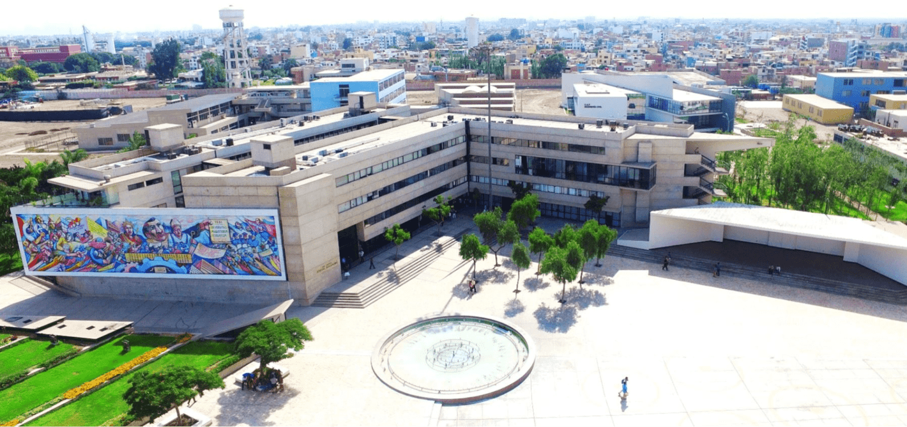

The II Latinamerican Conference on Superconductivity and Magnetism will be held at the «Instituto de Investigacion de Fisica«, Facultad de Ciencias Fisicas, campus of the «Universidad Nacional Mayor de San Marcos», located in the Lima City, Peru from 23rd to 27th October 2023.
Address:
Instituto de Investigacion de Fisica, Facultad de Ciencias Fisica, Universidad Nacional Mayor de San Marcos, Campus Universitario, Av. Universitaria (cruce con Av. Venezuela). Cercado de Lima, Peru.
About Lima:
Lima is the capital of the Republic of Peru. It is located in the central coast of the country, on the shores of the Pacific Ocean, integrating an extensive and populated urban area, flanked by the coastal desert and extended over the valleys of the rivers Chillón, Rímac y Lurín. The census projection of 2022 established a population of 13,943,800 inhabitants, a figure that makes it the most populous city in the country. Currently, it is considered as the political, economic, industrial, cultural, financial and commercial center of the country. On the international level, it is the fifth largest city in Latin America, fourth by GDP, fifth by number of inhabitants and one of the thirty most populous urban agglomerations in the world. On January 18, 1535, it was founded with the name «Ciudad de los Reyes» by the Spanish conquistador Francisco Pizarro in the agricultural region known by coastal natives as Limac, later as Lima, a name that was acquired over time. It was the capital of the viceroyalty of Peru in its valleys and its low altitude above the sea level in replacement of Jauja, which is located in the Andes. The viceroyalty, at the time, functioned as the most relevant administrative entity of the Hispanic Monarchy in South America, while Lima was the largest and most important city in South America during the colonial period. Lima is the seat of the oldest institution of higher education in the New World, the Universidad Nacional Mayor de San Marcos, founded on May 12, 1551 during the Spanish viceregal regime, and the oldest, most recognized and important university in Peru.
About the Major National University of San Marcos:
The Universidad Nacional Mayor de San Marcos (UNMSM) is the most important, recognized and representative educational institution in Peru. At a continental level, being the first officially founded and the one with the longest time in continuous operation since its foundation, it is recognized as the oldest university in America. It is considered as the most important and representative Peruvian institution of higher education for its «tradition, prestige, quality and selectivity», being also recognized as the institution with the greatest scientific production in Peru. It ranks the first position in Peru according to certain editions of various national and international university rankings.

Besides, has a ten-year institutional license granted by SUNEDU and an institutional accreditation that certifies its academic and administrative quality. Regarding research, according to information from the SCOPUS database, the University of San Marcos is to date the first Peruvian institution in the production of scientific articles, both annually and historically accumulated. Several influential Peruvians and Latin Americans have been educated in its classrooms, all alumnus recognizing and appreciating the high level of teaching and the active and important participation intellectual that the university and its students had throughout the history of Peru.
More information about the UNMSM here.
Official UNMSM web page here.
SPONSORS